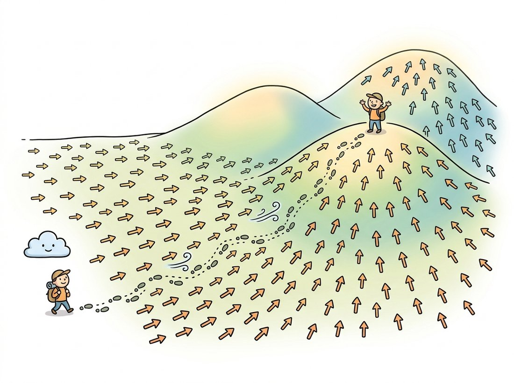

"Nobody could tell me how much probability there was in total, so I gave up trying to count it. I only learned which way was uphill. Turns out that if you always know which way the data lies, and take small steps with a little luck mixed in, you arrive anyway. The grand total never mattered."
An Energy Function With a Missing Normalizer
You can model a distribution without ever normalizing it. Assign every image an energy $E(\mathbf{x})$, declare that probability falls off exponentially with energy, learn the gradient of log-probability (the score) instead of the probability itself, and sample by walking uphill in probability with noise injected. That gradient field, the score, and that sampling walk, Langevin dynamics, are the direct mathematical ancestors of diffusion models. The reason this matters is that the obvious approach, write a normalized density and maximize its likelihood, hits a wall: the normalizing constant (the partition function) is an integral over all images that nobody can compute. This section shows the wall, then shows three ways around it that together make up the score-based view of generative modeling. By the end you will see why Chapter 33's diffusion models are not a new idea but the maturation of the one built here.
The previous two sections took the latent route to $p(\mathbf{x})$: introduce a hidden code and decode it. This section takes a different route that uses no latent at all. We model the data distribution's shape directly through an energy, confront the partition-function problem that makes direct likelihood training impossible, and then sidestep it by learning the score and sampling with Langevin dynamics. This is the most mathematical section of the chapter, and it is deliberately so: the machinery here is the spine of modern diffusion, flagged in the cross-reference map as the arc that runs from energies and scores here, through the score SDEs of Chapter 33, to flow matching. We build it carefully so that arc feels like one continuous idea.
1. Energy-Based Models and the Partition Function Intermediate
An energy-based model (EBM) defines a probability density through a scalar energy function $E_\theta(\mathbf{x})$, a neural network that outputs one number per image. Low energy means high probability:
This is wonderfully flexible: any function $E_\theta$ at all defines a valid density, so the network has no architectural constraint (unlike the invertibility a flow demands). The catch is $Z_\theta$, the partition function, the normalizing constant that makes the density integrate to one. It is an integral over the entire $150{,}528$-dimensional image space, and it is hopeless to compute. Worse, it depends on $\theta$, so it changes every time we update the network. Maximum-likelihood training needs $\log p_\theta(\mathbf{x}) = -E_\theta(\mathbf{x}) - \log Z_\theta$, and the $\log Z_\theta$ term, with its intractable gradient, blocks the path. The energy view is the bottom of the cross-reference arc "scores and energies"; everything in this section is about getting useful behavior out of $E_\theta$ without ever touching $Z_\theta$.
Here is the trick that unlocks everything. Take the gradient of the log-density with respect to $\mathbf{x}$ (not with respect to $\theta$):
The $\log Z_\theta$ term is a constant in $\mathbf{x}$, so its gradient is zero and it vanishes. The gradient of log-probability with respect to the image, called the score and written $\mathbf{s}_\theta(\mathbf{x}) = \nabla_{\mathbf{x}} \log p_\theta(\mathbf{x})$, depends only on the energy's gradient and is completely free of the intractable partition function. If we learn the score directly, we never need $Z_\theta$ at all. This single observation is the seed of score-based generative modeling.
Having spent Part III backpropagating, learners naturally read "gradient of log-probability" as the usual gradient with respect to the network weights, the thing an optimizer follows during training. The score is the opposite: $\mathbf{s}_\theta(\mathbf{x}) = \nabla_{\mathbf{x}} \log p_\theta(\mathbf{x})$ is the gradient with respect to the image pixels, a vector that lives in the same $150{,}528$-dimensional space as the image itself and points toward more-probable images (the arrows in Figure 30.4.1). It is this $\nabla_{\mathbf{x}}$, not $\nabla_\theta$, that makes the partition function $Z_\theta$ drop out: $Z_\theta$ is constant in $\mathbf{x}$ but not in $\theta$, which is exactly why direct maximum-likelihood training (a $\theta$ gradient) stays blocked while score-based sampling (an $\mathbf{x}$ gradient) does not. Confusing the two erases the whole point of the section. A second, related slip: a trained score network still does not hand you $p_\theta(\mathbf{x})$ itself, only its spatial gradient, so a diffusion model cannot report the probability of an image any more than a GAN can.
2. The Score Is a Vector Field Pointing Toward Data Beginner
What is the score, geometrically? At every point $\mathbf{x}$ in image space, the score $\mathbf{s}(\mathbf{x}) = \nabla_{\mathbf{x}} \log p(\mathbf{x})$ is a vector pointing in the direction of steepest increase of log-probability, the direction that most quickly moves you toward more-probable images. Recall the manifold picture of Section 30.1: real images sit on a thin sheet, and almost everywhere else is low-probability noise. The score field is the set of arrows pointing back toward that sheet from wherever you are. Stand on a noise point and the score points toward the manifold; stand on the manifold and the score points along the directions of higher density. Figure 30.4.1 draws this field for a simple two-mode distribution.
3. Score Matching: Learning the Field Without the Density Advanced
This is the technical heart of the section, and it turns on a move that should feel impossible at first sight: we are about to fit a network to a target we can never observe. We want to train a network $\mathbf{s}_\theta(\mathbf{x})$ to match the true score $\nabla_{\mathbf{x}} \log p_{\text{data}}(\mathbf{x})$. The obvious objective, the expected squared difference between them, is unusable because we do not know the true score (it depends on the data density we are trying to learn). So how can you regress toward a quantity you never see? Hyvarinen's score matching result (2005) is the remarkable identity that answers it: that intractable objective equals, up to a constant, a tractable one that involves only the model's score and its derivative,
The true density never appears; only expectations over the data (which we approximate with samples) and the model's own score and Jacobian trace remain. (The trace term $\operatorname{tr}(\nabla_{\mathbf{x}} \mathbf{s}_\theta(\mathbf{x}))$ is the sum of the diagonal of the score's Jacobian, that is, how much each component of the score arrow grows as you nudge its own input coordinate; intuitively it rewards the field for spreading outward where data is dense.) The trace term is expensive in high dimensions, which led to two practical variants: sliced score matching (project the Jacobian onto random directions) and, far more important for vision, denoising score matching. The denoising variant adds Gaussian noise of scale $\sigma$ to the data and trains the network to predict the score of the noised distribution, which has a beautifully simple closed form: the score of a Gaussian-noised point is proportional to the noise that was added. That equivalence, learning the score equals learning to denoise, is the exact bridge to diffusion, and it is worth stating in code.
# Denoising score matching: add noise of scale sigma, predict the score.
# Key fact: for x_noisy = x + sigma * eps with eps ~ N(0, I),
# the score of the noised density is -(x_noisy - x) / sigma^2 = -eps / sigma.
# So a network that predicts the score is, up to scale, predicting the noise eps.
import torch
import torch.nn as nn
def denoising_score_matching_loss(score_net, x, sigma):
eps = torch.randn_like(x) # the noise we add
x_noisy = x + sigma * eps # corrupt the clean data
target_score = -eps / sigma # closed-form score of the noised point
pred_score = score_net(x_noisy, sigma) # network's estimate of the score
return ((pred_score - target_score) ** 2).mean()
# A tiny score network for a 2-D toy (in practice a U-Net over images).
score_net = nn.Sequential(nn.Linear(3, 64), nn.SiLU(),
nn.Linear(64, 64), nn.SiLU(),
nn.Linear(64, 2))
def net(x, sigma): # concat sigma as a feature
s = torch.full((x.size(0), 1), float(sigma))
return score_net(torch.cat([x, s], dim=1))
x = torch.randn(256, 2) # toy "data" batch
loss = denoising_score_matching_loss(net, x, sigma=0.5)
print("DSM loss:", round(loss.item(), 4)) # DSM loss: a positive scalar to minimizedenoising_score_matching_loss, adding sigma * eps gives the noised point a closed-form target_score of -eps / sigma, so the regression target is simply a scaling of the noise that was added. A network minimizing the squared error against that target learns the score, and predicting the score is the same task as predicting the noise. This is precisely the objective Chapter 33 trains a U-Net on (the encoder-decoder segmentation architecture with skip connections from Section 24.1, repurposed here as the denoiser), across many noise levels at once.The single most important takeaway of this section is the equivalence in the code above. Training a network to remove Gaussian noise from a corrupted image is mathematically the same as training it to estimate the score of the noised data distribution. This is why the denoising thread that runs through the whole book, from the Gaussian and non-local-means filters of Chapter 7, through denoising autoencoders, lands exactly on diffusion. A diffusion model is a denoiser trained at many noise levels, and because denoising is score estimation, a diffusion model is a score estimator. The arrow field of Figure 30.4.1 and the denoiser of Chapter 7 are the same object seen from two sides.
The partition function $Z_\theta$ is the integral nobody can compute, lurking in every energy-based model like an unpaid invoice. Score matching's entire trick is to differentiate with respect to $\mathbf{x}$ so that $Z_\theta$, being constant in $\mathbf{x}$, politely shows itself out. We did not solve the hardest integral in the room. We just asked it a question it could not answer and watched it leave.
4. Langevin Dynamics: Sampling by Following the Score Advanced
A learned score field is a set of arrows; Langevin dynamics is how you turn arrows into samples. Starting from a random point, repeatedly take a small step in the score direction (uphill in probability) and add a calibrated dose of Gaussian noise:

The score term drags the sample toward high-density regions; the noise term keeps it from collapsing onto a single point and lets it explore. As the step size $\eta$ shrinks and the number of steps grows, the distribution of $\mathbf{x}_t$ provably converges to the true $p(\mathbf{x})$. Without the noise term this would be plain gradient ascent that piles every sample onto the nearest mode (no diversity); the noise is what makes it sample rather than optimize. The toy implementation below follows the score of a known two-mode density and shows the walk converging into the modes, exactly the red trajectory of Figure 30.4.1.
# Turn a known score field into samples by Langevin dynamics: from broad noise,
# repeatedly step uphill along the score and add a calibrated dose of Gaussian noise.
# Use a 1-D two-Gaussian mixture so the true score has a closed form to follow.
import torch
# Known toy density: mixture of two Gaussians in 1-D, so we can write the true score.
def true_score(x):
# p(x) = 0.5 N(-2, 0.5^2) + 0.5 N(+2, 0.5^2); score = d/dx log p(x).
import math
def comp(mu): return torch.exp(-0.5 * ((x - mu) / 0.5) ** 2)
pa, pb = comp(-2.0), comp(2.0)
p = pa + pb # unnormalized density (Z cancels in the score)
grad = pa * (-(x + 2) / 0.25) + pb * (-(x - 2) / 0.25)
return grad / p # = d/dx log p(x)
def langevin(score_fn, n=2000, steps=500, eta=0.02):
x = torch.randn(n, 1) * 3 # start from broad noise
for _ in range(steps):
noise = torch.randn_like(x)
x = x + 0.5 * eta * score_fn(x) + (eta ** 0.5) * noise # the update above
return x
samples = langevin(true_score)
# Most samples should land near -2 or +2, recovering the two modes.
near_a = ((samples + 2).abs() < 0.6).float().mean()
near_b = ((samples - 2).abs() < 0.6).float().mean()
print(f"fraction near mode -2: {near_a:.2f}, near +2: {near_b:.2f}")
# fraction near mode -2: ~0.49, near +2: ~0.49langevin loop starts from broad noise and, each step, nudges samples uphill along true_score and injects (eta ** 0.5) * noise; after a few hundred steps the near_a and near_b fractions show the samples settled into the two modes in roughly equal proportion. The noise term is essential: remove it and every sample collapses onto whichever mode it started nearest, destroying diversity.Keep the noise term, but vary the eta and steps knobs of langevin and watch the two coverage fractions. Push eta up toward $0.5$ and observe samples overshoot and scatter (the discretization error of too large a step); drop it toward $0.001$ with steps left at $500$ and observe the walk fail to reach the modes in time, with many samples stranded between $-2$ and $+2$. Then compensate by holding eta small while raising steps into the thousands and watch the two fractions climb back toward $0.5$ each. The intuition this builds: convergence depends on the product of step size and step count, the same tension between sample quality and the number of passes that you will meet as the step-count knob of a diffusion sampler in Chapter 33.
One practical wrinkle drove the field forward. In high dimensions the score is poorly estimated far from the data (there is almost no training data out in the empty regions of pixel space), so naive Langevin sampling mixes badly. The fix, introduced by Song and Ermon in the Noise Conditional Score Network (2019), is to estimate the score at many noise levels and sample by annealed Langevin dynamics: start at a high noise level where the score is easy to estimate everywhere, then gradually anneal to low noise. That annealing across noise levels is, almost exactly, the reverse process of a diffusion model, which is why this section is the direct precursor to Chapter 33.
Who: a generative-modeling research group around 2019, weighing where to invest. Situation: GANs produced the sharpest images but were notoriously unstable to train and prone to mode collapse; the team had burned months babysitting adversarial training runs that diverged for no clear reason. Problem: they wanted GAN-level sample quality with a stable, well-understood training objective and full coverage of the data distribution. Decision: they pursued the score-matching route precisely because its training objective is a plain regression loss (predict the noise), with no adversary, no minimax game, and no partition function. The bet was that a stable objective plus annealed Langevin sampling could eventually match GAN quality. Result: within two years the score and diffusion line (NCSN, then DDPM in 2020) had matched and then surpassed GANs on image quality, with markedly more stable training, and by 2022 it underpinned the text-to-image systems that reached the public. Lesson: the choice of objective can matter more than the choice of architecture. Trading the adversarial game for a denoising regression, an idea that lives entirely in this section, is what made large-scale image generation stable enough to industrialize. The energy and score view was not a curiosity; it was the foundation the field actually built on.
You will almost never hand-code annealed Langevin sampling in production. In diffusers the entire noise-level schedule and the score-following update are packaged as a scheduler object, and sampling is a short loop over timesteps:
# Annealed score sampling, packaged. The scheduler bundles the noise-level
# schedule, step size, and noise injection that the hand-written langevin loop
# spelled out; sampling is a short loop over scheduler.timesteps (high to low noise).
import torch
from diffusers import UNet2DModel, DDPMScheduler
model = UNet2DModel.from_pretrained("google/ddpm-cifar10-32").to("cuda") # a trained score/noise net
scheduler = DDPMScheduler.from_pretrained("google/ddpm-cifar10-32") # the annealing schedule
scheduler.set_timesteps(1000)
x = torch.randn(4, 3, 32, 32, device="cuda") # start from pure noise
for t in scheduler.timesteps: # high noise -> low noise
noise_pred = model(x, t).sample # the learned score/noise
x = scheduler.step(noise_pred, t, x).prev_sample # one annealed updatediffusers scheduler. The loop over scheduler.timesteps walks from high noise to low noise; each scheduler.step call performs one annealed-Langevin update on the model's predicted score, bundling the noise-level schedule, step size, and noise injection that the from-scratch langevin function spelled out by hand.The scheduler handles the noise-level schedule, the step sizes, and the noise injection, the entire annealed-Langevin machinery of this section, in one step call. Hand-rolling it correctly across a thousand levels is the multi-hundred-line task that Chapter 33 walks through; the from-scratch toy above exists so the step call is not a black box.
The arc that begins in this section is still advancing in 2024 to 2026. Song et al. (2021) unified score matching and diffusion under a single stochastic differential equation, the score-SDE view, showing the discrete Langevin steps here as a discretization of a continuous-time process, and you will meet that view directly in Chapter 33. Flow matching (Lipman et al., 2023) and rectified flow (Liu et al., 2023) push further, replacing the noisy stochastic walk with a learned deterministic velocity field that transports noise to data along straight-ish paths, the basis of Stable Diffusion 3 and several 2024 to 2025 systems. The through-line of the cross-reference map, "scores and energies introduced here, deepened into score SDEs, transformed into flow matching", is one of the cleanest in the book: nearly every state-of-the-art image generator today is, under the hood, estimating the score field this section defines and integrating along it. What changes year to year is the integrator and the schedule, not the core idea.
5. The Hyvarinen Identity: Eliminating the Unknown Data Score Advanced
Section 3 stated score matching as a result and trusted you to take it on faith. We now earn it. The problem is sharp and worth restating before the solution: we want to minimize the Fisher divergence between the data score and the model score,
but the first term inside the norm, $\nabla_{\mathbf{x}} \log p_{\text{data}}(\mathbf{x})$, is exactly the quantity we cannot observe: the true score of the data distribution. The objective is well defined yet uncomputable, which is the wall that stops a naive regression dead. Hyvarinen's 2005 result is that this wall is an illusion. By expanding the square and applying integration by parts to one cross term, the unknown data score disappears entirely, leaving an objective in the model alone.
Expand the squared norm into three pieces:
The first piece does not contain $\theta$, so for optimization it is a constant we may discard. Its value is $\tfrac{1}{2}\,\mathbb{E}_{p_{\text{data}}}\|\nabla_{\mathbf{x}} \log p_{\text{data}}\|^2$, the self-energy of the data score; it is the price of admission we never have to pay because it never moves the minimizer. The third piece involves only the model and is harmless. Everything hinges on the middle piece, which still contains the unknown $\nabla_{\mathbf{x}} \log p_{\text{data}}$. Integration by parts is what removes it.
The cross term carries the unknown data score through the factor $\nabla_{\mathbf{x}} \log p_{\text{data}} \cdot p_{\text{data}} = \nabla_{\mathbf{x}} p_{\text{data}}$ (the log-derivative identity). Integration by parts moves the derivative off $p_{\text{data}}$ and onto the model score, turning an expectation we cannot evaluate into a derivative of the model we can. The data density survives only as the measure we average over, never as something we must differentiate.
Work the 1-D case explicitly, where it is fully transparent; the multivariate version is the same argument applied coordinate by coordinate. Write $\psi(x;\theta) = s_\theta(x) = \tfrac{d}{dx}\log p_\theta(x)$ for the scalar model score. The cross term is
The data density has cancelled out of the integrand and now appears only through its derivative $\tfrac{d p_{\text{data}}}{dx}$. Apply integration by parts, $\int u'\,v = [uv] - \int u\,v'$, with $u = p_{\text{data}}$ and $v = \psi$:
The boundary term $[\,p_{\text{data}}\,\psi\,]_{-\infty}^{+\infty}$ vanishes under the mild regularity condition that $p_{\text{data}}(x)\,\psi(x;\theta) \to 0$ as $\|x\| \to \infty$, which holds whenever the data density decays at the tails faster than the model score grows (true for any density with finite variance and a reasonable model). What remains is $-\int p_{\text{data}}\,\tfrac{d\psi}{dx}\,dx = -\mathbb{E}_{p_{\text{data}}}\!\big[\tfrac{d}{dx}\psi(x;\theta)\big]$. The unknown data score is gone; only a derivative of the model score survives. Substituting back, and noting the cross term entered $J(\theta)$ with a minus sign, the two minus signs combine to a plus:
where in $d$ dimensions the parts integral runs once per coordinate and the surviving derivatives assemble into the trace of the Hessian of the log-density, $\operatorname{tr}(\nabla_{\mathbf{x}}^2 \log p_\theta) = \sum_i \partial^2/\partial x_i^2 \log p_\theta$, the Laplacian. This is exactly the objective of Section 3 (there written with the equivalent $\operatorname{tr}(\nabla_{\mathbf{x}} \mathbf{s}_\theta)$, since $\mathbf{s}_\theta = \nabla_{\mathbf{x}} \log p_\theta$), now derived rather than asserted. The dropped constant is the data-score self-energy $\tfrac{1}{2}\,\mathbb{E}\|\nabla \log p_{\text{data}}\|^2$ identified above; it shifts $J$ by a fixed amount but leaves $\arg\min_\theta J$ untouched, which is all an optimizer cares about.
The Laplacian $\operatorname{tr}(\nabla_{\mathbf{x}}^2 \log p_\theta)$ requires the diagonal of a $d \times d$ Hessian, and for an image $d \approx 150{,}000$, so a naive evaluation needs on the order of $d$ backward passes per example, which is ruinous. This single cost is why pure Hyvarinen score matching never scaled to images and why the field reached for two cheaper estimators of the same objective: sliced score matching, which replaces the trace by $\mathbb{E}_{\mathbf{v}}[\mathbf{v}^\top \nabla_{\mathbf{x}} \mathbf{s}_\theta\,\mathbf{v}]$ over random projections $\mathbf{v}$ (one Hessian-vector product instead of $d$), and denoising score matching, the subject of Section 6, which removes the derivative term altogether by changing what is being matched.
6. Denoising Score Matching: A Closed-Form Target Advanced
The Laplacian term makes Hyvarinen's objective exact but costly, and the costlier it is the less it fits the high-dimensional vision setting that motivates this whole book. Vincent's 2011 denoising score matching removes the trace term entirely, at the price of a controlled approximation: instead of matching the score of the data, it matches the score of the data convolved with a small Gaussian. The trade is overwhelmingly worth it, because the convolution gives the regression target a closed form with no derivatives at all.
Perturb each clean point $\mathbf{x}$ with isotropic Gaussian noise, $q_\sigma(\tilde{\mathbf{x}}\mid\mathbf{x}) = \mathcal{N}(\tilde{\mathbf{x}};\,\mathbf{x},\,\sigma^2 \mathbf{I})$, and define the noised marginal $q_\sigma(\tilde{\mathbf{x}}) = \int q_\sigma(\tilde{\mathbf{x}}\mid\mathbf{x})\,p_{\text{data}}(\mathbf{x})\,d\mathbf{x}$. Vincent's theorem states that matching the score of this noised marginal is equivalent, up to a constant, to a denoising objective that uses only the per-sample conditional:
The target $\nabla_{\tilde{\mathbf{x}}} \log q_\sigma(\tilde{\mathbf{x}}\mid\mathbf{x})$ is the score of a single Gaussian centered at the known clean point, which we can write down in closed form. For $q_\sigma(\tilde{\mathbf{x}}\mid\mathbf{x}) \propto \exp\!\big(-\|\tilde{\mathbf{x}} - \mathbf{x}\|^2 / 2\sigma^2\big)$,
Read the target literally: it is the clean point minus the noisy point, scaled by $1/\sigma^2$, that is, it points from where you are ($\tilde{\mathbf{x}}$) back toward the clean data ($\mathbf{x}$). Since $\tilde{\mathbf{x}} = \mathbf{x} + \sigma\boldsymbol{\epsilon}$ with $\boldsymbol{\epsilon}\sim\mathcal{N}(\mathbf{0},\mathbf{I})$, this equals $-\sigma\boldsymbol{\epsilon}/\sigma^2 = -\boldsymbol{\epsilon}/\sigma$: the target is the negative of the added noise, scaled by $1/\sigma$, the opposite sign of the noise you injected. A network minimizing this loss is literally learning to point away from the noise it must remove, which is why denoising and score estimation are the same task. The code block of Section 3 (Code Fragment 1) implements exactly this target, $-\boldsymbol{\epsilon}/\sigma$; we have now derived where it comes from.
Crucially, $J_{\text{DSM}}(\theta) = J_{\text{ESM}_{q_\sigma}}(\theta) + \text{const}$: the denoising objective equals the explicit (Hyvarinen) score-matching objective for the noised density $q_\sigma$, not for $p_{\text{data}}$ itself. The minimizer $\mathbf{s}_\theta$ therefore learns $\nabla \log q_\sigma$, the score of the data blurred at scale $\sigma$, which agrees with the true data score $\nabla \log p_{\text{data}}$ only in the limit $\sigma \to 0$. A larger $\sigma$ gives an easier, better-conditioned target everywhere in space but a more biased one; a smaller $\sigma$ recovers the true score but only near the data, where samples are scarce. This bias-versus-coverage tension across $\sigma$ is precisely what the multi-noise-level scheme of Section 7 is built to resolve, and it is the exact mechanism that links score matching to diffusion: a diffusion model is denoising score matching run at a whole ladder of noise levels at once.
7. Noise-Conditional Networks and Annealed Langevin Sampling Advanced
Section 6 left us with a dilemma we could not resolve at a single noise scale: small $\sigma$ gives an accurate but poorly covered score, large $\sigma$ gives broad coverage but a biased score. Song and Ermon's 2019 Noise Conditional Score Network (NCSN) resolves it by refusing to choose. It trains one network $\mathbf{s}_\theta(\mathbf{x}, \sigma)$ conditioned on the noise level, over a geometric ladder $\sigma_1 > \sigma_2 > \dots > \sigma_L$ spanning from a large scale that fills the ambient space down to a small scale that resolves the data, and it learns the denoising-score target at every level simultaneously with a single weighted objective:
The bracket is the per-level denoising-score-matching loss of Section 6, with the target written as $-(\tilde{\mathbf{x}} - \mathbf{x})/\sigma_i^2 = (\mathbf{x} - \tilde{\mathbf{x}})/\sigma_i^2$ moved to the same side. The $\sigma_i^2$ weight is the load-bearing detail: the DSM target $(\mathbf{x} - \tilde{\mathbf{x}})/\sigma_i^2$ has typical magnitude of order $1/\sigma_i$, so its squared error scales like $1/\sigma_i^2$ and would let the smallest-noise level dominate the sum. Multiplying each term by $\sigma_i^2$ cancels that scaling and makes every level contribute a loss of order one, so the network allocates capacity evenly across the ladder rather than overfitting the low-noise end. This is the same weighting that reappears, under different names, in the loss-weighting design of diffusion training in Chapter 33.
With one network covering all noise levels, sampling resolves the coverage problem of Section 4 by walking down the ladder. The idea is annealed Langevin dynamics: run a short Langevin chain at the highest, easiest noise level, then use its endpoint to initialize the chain at the next level down, and repeat all the way to $\sigma_L$. Early levels move the sample into the right broad region of space (where high-noise scores are reliable everywhere); later levels sharpen it onto the data manifold (where low-noise scores are accurate). The per-level step size $\alpha_i = \epsilon\,\sigma_i^2/\sigma_L^2$ shrinks with the noise level so the chain takes large exploratory steps early and fine corrective steps late.
Input: noise-conditional score network $\mathbf{s}_\theta(\mathbf{x}, \sigma)$; noise ladder $\sigma_1 > \dots > \sigma_L$; base step size $\epsilon$; steps per level $T$.
1. Initialize $\mathbf{x}_0 \sim \mathcal{N}(\mathbf{0},\ \sigma_1^2 \mathbf{I})$ (broad noise at the largest scale).
2. For each level $i = 1, \dots, L$:
(a) Set the step size $\alpha_i = \epsilon\,\sigma_i^2 / \sigma_L^2$.
(b) For $t = 1, \dots, T$: draw $\mathbf{z}_t \sim \mathcal{N}(\mathbf{0}, \mathbf{I})$ and update
$\mathbf{x}_t = \mathbf{x}_{t-1} + \dfrac{\alpha_i}{2}\,\mathbf{s}_\theta(\mathbf{x}_{t-1}, \sigma_i) + \sqrt{\alpha_i}\,\mathbf{z}_t$.
(c) Carry the endpoint forward: initialize level $i{+}1$ from the final $\mathbf{x}_T$ of level $i$.
Output: $\mathbf{x}_T$ from the final level $\sigma_L$, a sample approximating $p_{\text{data}}$.
The update inside step (b) is the Langevin step of Section 4 with $\eta = \alpha_i$, now conditioned on the noise level and reusing the chain across levels. The block below implements the NCSN training objective: the weighted denoising-score-matching loss for a noise-conditional network, summed over the geometric ladder.
# NCSN training objective (Song & Ermon 2019): weighted denoising score matching
# for a noise-conditional network s_theta(x, sigma), summed over a geometric ladder.
# Per level the DSM target is (x - x_noisy) / sigma^2 = -eps / sigma; the sigma^2
# weight rescales each level's squared error to order one so no level dominates.
import torch
def ncsn_loss(score_net, x, sigmas):
# x: (B, D) clean batch; sigmas: 1-D tensor of noise levels, large -> small.
total = 0.0
for sigma in sigmas:
eps = torch.randn_like(x) # fresh noise per level
x_noisy = x + sigma * eps # corrupt at this level
target = (x - x_noisy) / sigma**2 # closed-form DSM score = -eps / sigma
pred = score_net(x_noisy, sigma) # noise-conditional score estimate
per_level = 0.5 * ((pred - target) ** 2).sum(dim=1) # squared error per example
total = total + (sigma**2) * per_level.mean() # sigma^2 weighting -> order-one terms
return total / len(sigmas)
# Geometric noise ladder and a quick shape check on a 2-D toy batch.
sigmas = torch.exp(torch.linspace(0.0, -3.0, steps=10)) # 1.0 down to ~0.05, geometric
loss = ncsn_loss(lambda x, s: torch.zeros_like(x), torch.randn(256, 2), sigmas)
print("NCSN loss (zero net baseline):", round(float(loss), 4)) # a positive scalar to minimizesigma on the geometric ladder, the closed-form target (x - x_noisy) / sigma**2 is the denoising score of Section 6, the squared error is multiplied by sigma**2 so every level contributes an order-one term, and the levels are averaged. A real network takes sigma as a conditioning input (an embedding) rather than the placeholder used here for the shape check; the sampling counterpart is the annealed-Langevin algorithm above.8. What You Carry Into the Diffusion Chapter Beginner
This section built the engine room of modern generation without ever naming diffusion as such. You learned that an energy defines a density up to an intractable constant; that the score, the gradient of log-probability, sidesteps that constant entirely; that the score can be learned by denoising; and that Langevin dynamics turns a learned score into samples, made robust by annealing across noise levels. When Chapter 33 introduces the forward noising process and the learned reverse process, you will recognize the reverse process as exactly the annealed score walk built here. The remaining foundational question is what we are actually trading when we choose one sampler or one family over another, the quality, diversity, and speed of the result, which is the subject of the next section.
Write out $\log p_\theta(\mathbf{x}) = -E_\theta(\mathbf{x}) - \log Z_\theta$ and take its gradient with respect to $\mathbf{x}$, showing each step, to confirm that the score equals $-\nabla_{\mathbf{x}} E_\theta(\mathbf{x})$ and the partition function drops out. Then explain in one or two sentences why the gradient with respect to the parameters $\theta$ does not let $Z_\theta$ drop out, which is exactly why direct maximum-likelihood training of an EBM is hard while score matching is not.
Take the langevin function from Section 4 and make a copy that drops the noise term (keep only the score step). Run both on the two-mode density, starting all samples from the same broad-noise initialization, and report the fraction of samples landing near each mode for each version. You should find the noiseless version collapses samples onto whichever mode they started nearest, while the noisy version recovers both modes in roughly equal proportion. Write two sentences explaining why the noise term is what turns optimization into sampling.
The text claims that in high dimensions the score is poorly estimated far from the data, motivating annealed Langevin. Construct the argument carefully: explain why training data is essentially absent from the empty regions of a high-dimensional space (recall the curse of dimensionality from Section 30.1), why a score network therefore cannot learn reliable arrows there, and how starting at a high noise level (which spreads the data out to fill more of the space) repairs this. Conclude by stating in one sentence the relationship between the annealing schedule here and the reverse process of a diffusion model.
Reproduce the 1-D Hyvarinen derivation of Section 5 yourself without looking back. Start from the cross term $\int \tfrac{d p_{\text{data}}}{dx}\,\psi(x;\theta)\,dx$ (where $\psi = \tfrac{d}{dx}\log p_\theta$), apply integration by parts with $u = p_{\text{data}}$ and $v = \psi$, and write down the resulting boundary term and remaining integral. State the precise regularity condition under which the boundary term vanishes, and explain in one sentence why a Gaussian data density with any reasonable model score satisfies it. Conclude by assembling the full objective $J(\theta) = \mathbb{E}_{p_{\text{data}}}[\tfrac{1}{2}\psi^2 + \tfrac{d\psi}{dx}] + \text{const}$ and identifying the dropped constant.
Starting from $q_\sigma(\tilde{\mathbf{x}}\mid\mathbf{x}) = \mathcal{N}(\tilde{\mathbf{x}};\,\mathbf{x},\,\sigma^2\mathbf{I})$, compute $\nabla_{\tilde{\mathbf{x}}} \log q_\sigma(\tilde{\mathbf{x}}\mid\mathbf{x})$ in closed form and show it equals $(\mathbf{x} - \tilde{\mathbf{x}})/\sigma^2$. Then substitute the reparameterization $\tilde{\mathbf{x}} = \mathbf{x} + \sigma\boldsymbol{\epsilon}$ with $\boldsymbol{\epsilon}\sim\mathcal{N}(\mathbf{0},\mathbf{I})$ and show the target simplifies to $-\boldsymbol{\epsilon}/\sigma$. In one or two sentences, explain why this makes "predict the score" and "predict the negative of the added noise" the same regression problem, and state what the learned $\mathbf{s}_\theta$ converges to as $\sigma \to 0$.
Sample a 2-D toy dataset (for example the two-moons or a mixture of eight Gaussians arranged in a ring). Build a small MLP $\mathbf{s}_\theta(\mathbf{x}, \sigma)$ that takes the noisy point concatenated with a feature of $\sigma$ (its log is a good choice) and outputs a 2-D vector. Train it by minimizing the ncsn_loss of Code Fragment 4 over a geometric noise ladder of about ten levels. Then sample with the annealed-Langevin algorithm of Section 7: initialize from $\mathcal{N}(\mathbf{0}, \sigma_1^2\mathbf{I})$, run $T \approx 100$ Langevin steps per level with $\alpha_i = \epsilon\,\sigma_i^2/\sigma_L^2$, and carry the endpoint to the next level. Scatter-plot your samples against the true data and report whether all modes are recovered. As an ablation, set every $\sigma_i$ equal (single-level Langevin) and confirm that coverage degrades, demonstrating why annealing matters.
References Advanced
Introduces score matching and proves the central identity (Theorem 1): via integration by parts, the Fisher divergence between the data and model scores equals, up to a constant independent of $\theta$, an objective in the model alone, $\mathbb{E}_{p_{\text{data}}}[\operatorname{tr}(\nabla_{\mathbf{x}}^2 \log p_\theta) + \tfrac{1}{2}\|\nabla_{\mathbf{x}} \log p_\theta\|^2]$. This removes the unknown data score and the intractable partition function in one move and is the foundation of all score-based generative modeling.
Proves that score matching on a Gaussian-perturbed density is equivalent, up to a constant, to a denoising objective with the closed-form target $\nabla_{\tilde{\mathbf{x}}} \log q_\sigma(\tilde{\mathbf{x}}\mid\mathbf{x}) = (\mathbf{x} - \tilde{\mathbf{x}})/\sigma^2 = -\boldsymbol{\epsilon}/\sigma$. Denoising score matching eliminates the expensive Hessian trace of Hyvarinen's objective and is the exact mechanism connecting denoising autoencoders to score estimation and, later, to diffusion models.
Introduces the Noise Conditional Score Network (NCSN): a single network $\mathbf{s}_\theta(\mathbf{x}, \sigma)$ trained by $\sigma^2$-weighted denoising score matching across a geometric ladder of noise levels, sampled by annealed Langevin dynamics that walks from high to low noise. NCSN was the first score-based model to reach GAN-competitive image quality and is the direct precursor to the score-SDE and diffusion formulations of Chapter 33.